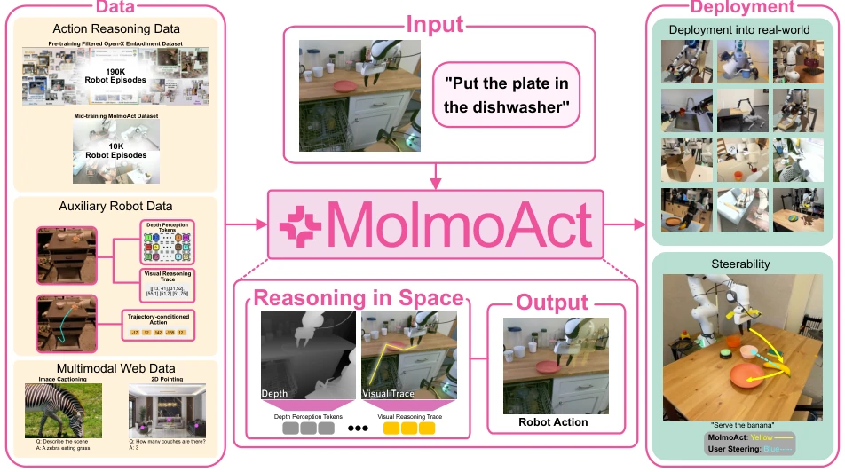
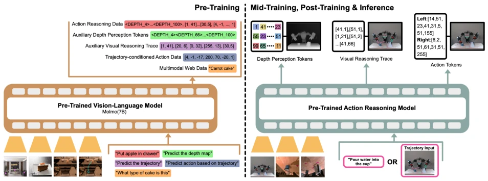
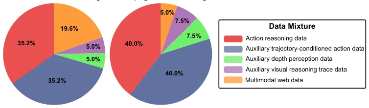
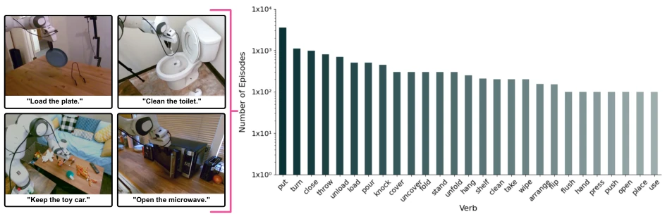
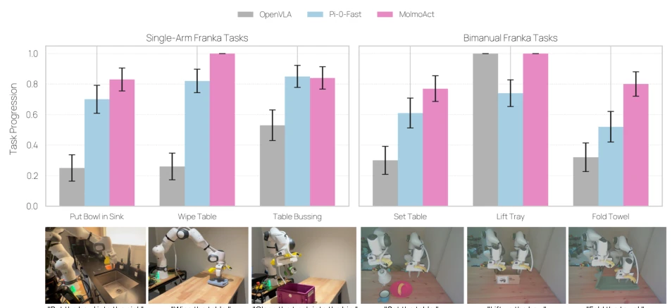
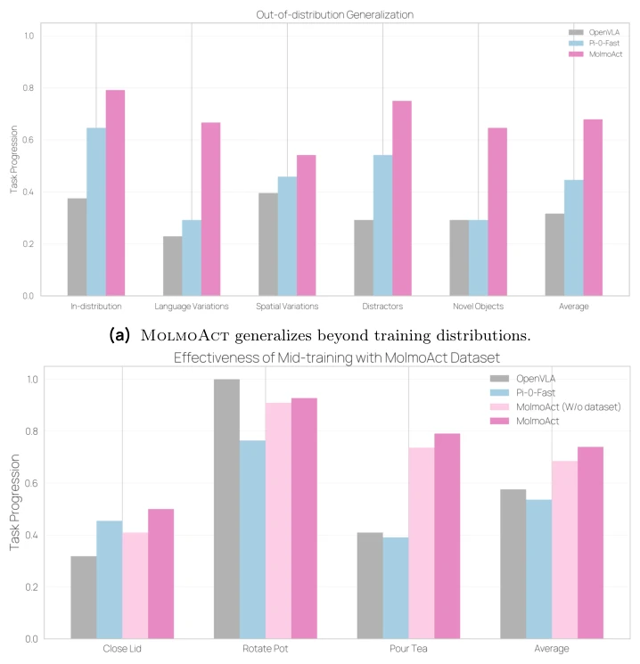
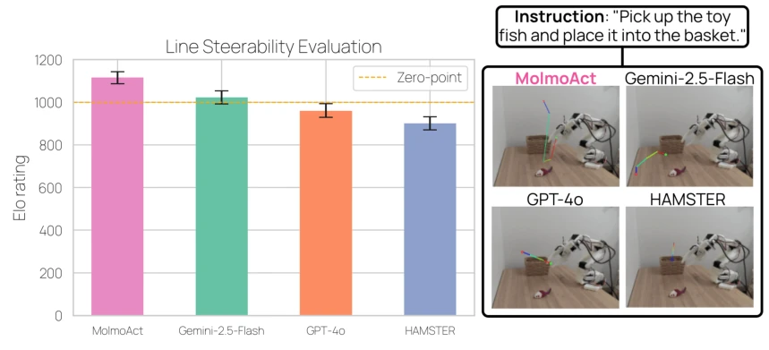
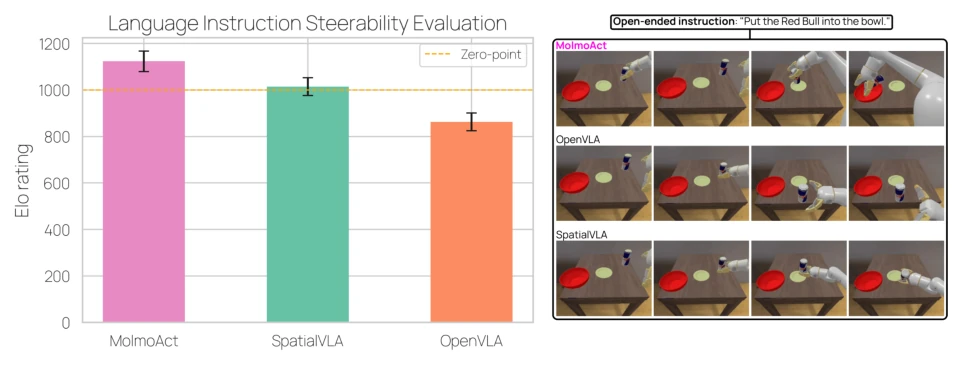
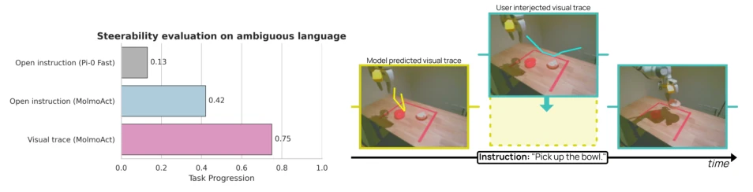
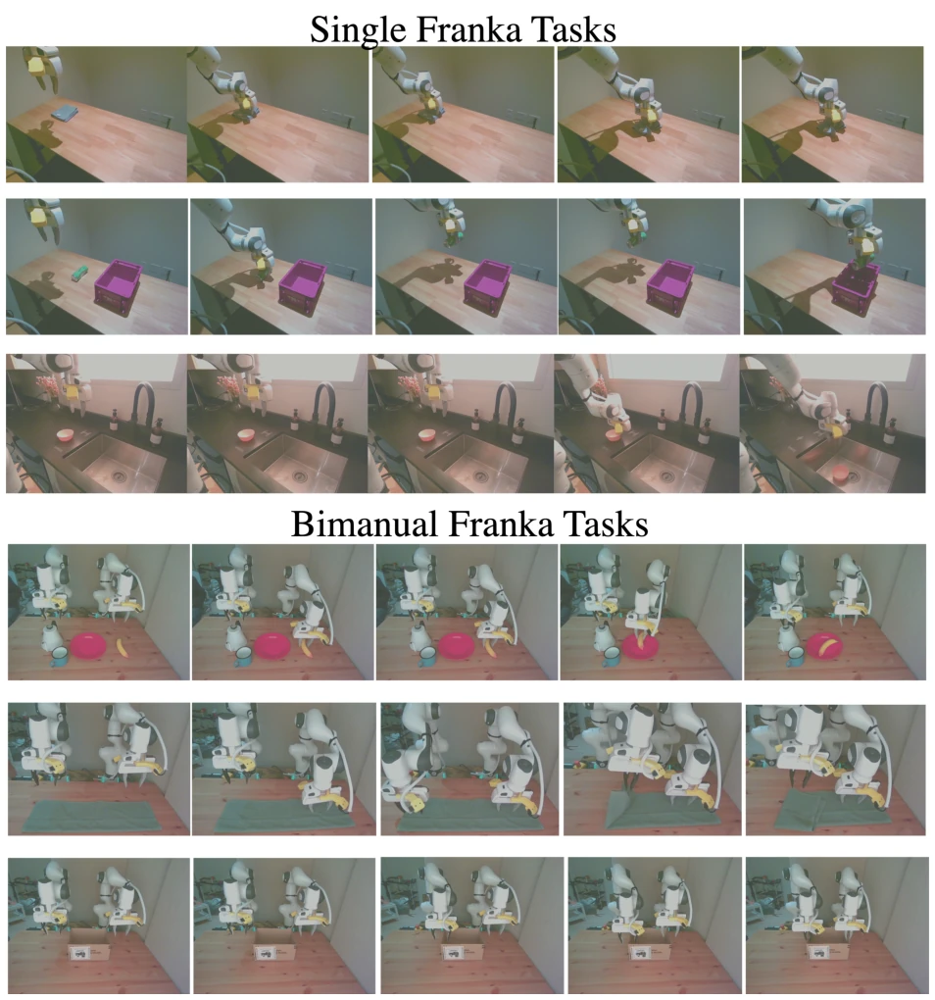

MolmoAct attempts to inject the "soul of spatial reasoning" into robot VLA models, moving beyond simple perception-to-action mapping. It implements a three-stage pipeline: first computing depth, then drawing trajectories, and finally generating actions; this approach is appealing and offers strong interpretability. The open-source weights and dataset are commendable, given that closed-source models are rampant nowadays. However, depth-aware tokens rely on VQVAE quantization; if depth estimation fails, the entire reasoning chain could collapse. Although it outperforms π0 and GR00T on SimplerEnv, real-world fine-tuning still relies on LoRA, indicating that generalization capabilities have not yet reached the "out-of-the-box" mystical level. Overall, it is a solid foundation, but do not expect it to directly solve all the menial and arduous tasks of the physical world, after all, "thinking" happens in the brain, not in the code.
研究动机Motivation
现有 VLA 模型大多直接将感知和指令映射到控制，导致适应性、泛化性和语义 grounding 受限 (Duan et al., 2022; Liu et al., 2025)。它们像黑盒，难以解释为何选某动作，且缺乏 3D 空间理解，难以处理需要深度感知的任务。虽然语言模型引入了 CoT，但机器人控制中缺乏空间推理结构 (Wei et al., 2022)。现有方法尝试语言推理，但忽略了深度和精确运动规划 (Sun et al., 2024; Zawalski et al., 2024)。MolmoAct 旨在通过结构化推理解决这些问题，让机器人像人一样在空间中思考，实现可解释且可控的行为。
Existing VLA models mostly directly map perception and instructions to control, leading to limitations in adaptability, generalization, and semantic grounding (Duan et al., 2022; Liu et al., 2025). They act as black boxes, making it difficult to explain why a certain action is selected, and lack 3D spatial understanding, making it hard to handle tasks requiring depth perception. Although language models have introduced CoT, there is a lack of spatial reasoning structures in robot control (Wei et al., 2022). Existing methods attempt language reasoning but ignore depth and precise motion planning (Sun et al., 2024; Zawalski et al., 2024). MolmoAct aims to address these issues through structured reasoning, enabling robots to think in space like humans, achieving interpretable and controllable behavior.
MolmoAct is built upon the Molmo VLM, adopting a three-stage autoregressive generation: depth-aware tokens, visual reasoning trace, and action tokens. Depth tokens quantize depth maps into 100 discrete tokens via VQVAE, providing 3D understanding. The visual trace is a 2D polyline representing the end-effector trajectory, used to align visual input and control output. Action tokens discretize continuous actions into 256 bins and map them to BPE symbols to maintain geometric structure and reduce training time. Training is divided into three stages: pre-training uses OXE subsets and auxiliary data; mid-training uses the MolmoAct dataset (10k+ trajectories); post-training uses LoRA fine-tuning. It supports users drawing traces for steerability control, which is more precise than language instructions. Regarding data, pre-training mixes action reasoning data, trajectory-conditioned action data, and multimodal web data. The mid-training stage specifically collects high-quality trajectories for home manipulation scenarios. The BPE mapping of action tokens utilizes similar characters for adjacent action bins, optimizing initialization. Depth-aware tokens use a pre-trained depth estimator for distillation to ensure the accuracy of 3D information. The entire pipeline emphasizes spatial grounding, allowing the reasoning process to be decoded into depth maps, trajectory overlays, and executed actions.

Figure 1 Overview. MolmoAct is an open action reasoning model that, given a user’s language instruction, reasons in space and autoregressively predicts three structured reasoning chains: Depth Perception Tokens for sensing and reconstructing the 3D environment, Visual Reasoning Trace Tokens for representing its planned trajectory in the scene, and Action Tokens for generating the corresponding robot control commands. Each explainable reasoning chain can be independently decoded—yielding a depth map of the scene, a 2D trajectory overlay on the image plane, and executed actions in the physical world—providing explicit, spatially grounded reasoning at every stage.

Figure 2 Training process of MolmoAct. The model training process consists of two stages: Pre-training (left) and Post-training, Mid-training & Inference (right). During pre-training, the vision–language backbone (Molmo) is trained on multimodal and robot reasoning data for diverse objectives, including discretized robot control, 2D pointing, trajectory drawing, open-vocabulary question answering, and perception token prediction. In post-training, the action reasoning model consumes multi-view camera images and either natural language instructions or visual trajectory inputs, generating perception tokens, visual reasoning trace tokens, and action tokens for execution.

Figure 3 Distribution of data mixture in the overall pre-training mixture (left) and in the sampled subset used for MolmoAct pre-training (right). The mixture contains primarily action reasoning data (38.7%), trajectory-conditioned data (38.7%), and multimodal web data (21.5%), with small fractions of auxiliary depth and trace data (0.5% each). The sampled subset increases the proportion of auxiliary data (7.5% each for depth and line) while reducing multimodal web data to 5%.

Figure 4 Examples and verb distribution in the MolmoAct Dataset. Left: Sample robot manipulation tasks paired with natural language instructions, spanning diverse household activities such as closing a laptop, loading a plate, cleaning a toilet, and opening a microwave. Right: Log-scale distribution of the top verbs in the dataset, showing a long-tail pattern with “put,” “turn,” and “close” as the most frequent actions.
It achieves 70.5% zero-shot on the SimplerEnv visual matching task, surpassing π0 and GR00T. The LIBERO benchmark average success rate is 86.6%, with a 6.3% improvement in long-horizon tasks. Real-world Franka single-arm and dual-arm tasks show improvements of 10% and 22.7% respectively. OOD generalization improves by 23.3%. Training on the MolmoAct dataset brings a 5.5% performance improvement. It achieves the highest human preference score. The model, code, and dataset are open-sourced. It compared against baselines such as OpenVLA and TraceVLA. Experiments cover both simulation and real-world settings. MolmoAct-7B-D performs strongly in the visual matching task on SimplerEnv. In the LIBERO benchmark, it outperforms autoregressive baselines across all categories, especially in long-horizon tasks. In real-world evaluation, both single-arm and dual-arm Franka tasks show significant progress. Ablation studies indicate that the mid-training stage is crucial for performance improvement. Additionally, the steerability function of the visual reasoning trace performs excellently in user interaction with high success rates.

Figure 5 Real-world evaluation of OpenVLA, π0-FAST, and MolmoAct on single-arm (left) and bimanual (right) Franka tasks. Bar plots report average task progression with standard error across 25 trials per task. MolmoAct consistently outperforms baselines, particularly on single-arm tasks such as Wipe Table and Table Bussing, and maintains strong performance on bimanual tasks including Fold Towel and Set Table. Bottom row shows example task setups with corresponding natural language instructions.

Figure 6 MolmoAct outperforms baselines across generalization and mid-training settings. (a) Out-of- distribution generalization: Task progression scores for OpenVLA, π0-FAST, and MolmoAct across in-distribution, language variation, spatial variation, distractors, and novel object conditions, showing consistent gains for MolmoAct. (b) Effectiveness of mid-training with the MolmoAct Dataset: Comparison of task progression on real-world tasks (Close Lid, Rotate Pot, Pour Tea) for MolmoAct with and without the dataset, π0-FAST, and OpenVLA, demonstrating that mid-training with the dataset improves performance across tasks.

Figure 7 Line steerability evaluation across models. Left: Elo ratings show that MolmoAct achieves the highest performance, surpassing Gemini-2.5-Flash, GPT-4o, and HAMSTER, with error bars indicating 95% confidence interval (CI). Right: Example qualitative results showing predicted visual traces overlaid on robot camera views.

Figure8 LanguageInstructionEvaluation. Left: Elo ratings for three models based on human votes in a head-to-head instruction-following evaluation. Right: Qualitative comparison of execution traces for the open-ended instruction “Put the redbull into the bowl." MolmoAct aligns more closely with the intended instruction than other models.

Figure 9 Steerability evaluation with open instructions and visual traces. Left: Success rates for different steering modes, showing that MolmoAct with visual trace steering achieves the highest success rate (0.75), outperforming its open-instruction variant and π0-FAST. Right: Example of the "Pick up the bowl" task: the model-predicted trajectory (yellow) is adjusted via a user-provided steering trajectory (cyan), resulting in the corrected task completion.

Figure 10 Examples of Single-arm and Bimanual Tasks. We list the observation breakdown to show how the robot performs each task.